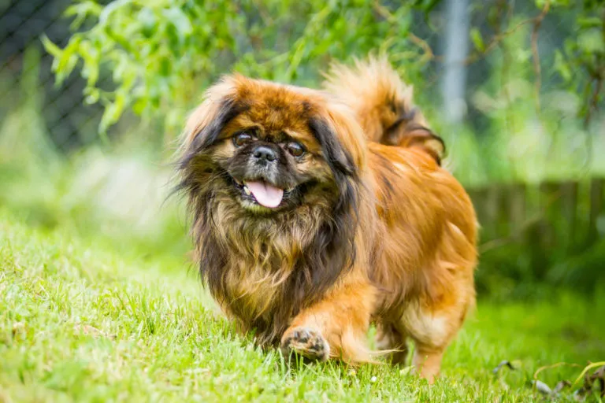

Presentación

El Pekinés es un perro de raza pequeña con un aspecto leonino, cuerpo robusto y pesado para su tamaño. Posee un pelaje doble, largo y liso, con una melena distintiva alrededor del cuello y una cola con flecos que se curva sobre su espalda. Suele pesar entre 3,2 y 5 kg, con una expresión digna y un hocico notablemente chato (braquicéfalo). Su pelaje puede ser de casi cualquier color, incluyendo leonado, rojo, negro o particolor.
Personalidad
Los Pekineses son perros valientes, orgullosos y muy independientes, con una dignidad que recuerda a sus raíces reales. Son intensamente leales a sus dueños, aunque pueden ser distantes con los extraños. A pesar de su tamaño, no son conscientes de su pequeñez y muestran un temperamento audaz. Son menos activos que otras razas pequeñas, prefiriendo la calma y el confort del hogar.
Origen
Esta raza milenaria tiene su origen en China, donde era considerada un animal sagrado y exclusivo de la familia imperial en la Ciudad Prohibida. Según la leyenda, el Pekinés es el resultado de la unión entre un león y una mona. Llegaron a Occidente en el siglo XIX, tras el saqueo del Palacio de Verano de Pekín, convirtiéndose rápidamente en favoritos de la aristocracia británica.
Salud
El Pekinés tiene una esperanza de vida de 12 a 15 años. Debido a su cara plana, son propensos al síndrome braquicefálico (dificultades respiratorias) y son muy sensibles al calor. También pueden sufrir problemas oculares debido a sus ojos prominentes y problemas de espalda (discos intervertebrales) por su columna larga. Es vital mantenerlos en ambientes frescos y evitar el ejercicio extenuante.
Aseo
Su denso pelaje requiere un mantenimiento constante para evitar nudos, recomendándose un cepillado diario profundo. Es crucial prestar atención especial a los pliegues de la cara, que deben limpiarse y secarse con regularidad para evitar infecciones cutáneas. También necesitan limpieza frecuente de ojos y oídos, además del recorte de uñas y cuidado dental básico.
Nutrición
El Pekinés tiene una tendencia natural a la obesidad debido a su nivel de actividad moderado-bajo. Necesitan una dieta de alta calidad controlada en calorías y adaptada a razas pequeñas. Es importante no excederse con los premios o "snacks", ya que el sobrepeso agrava sus problemas respiratorios y de columna. Se recomienda dividir su ración en dos tomas diarias para evitar digestiones pesadas.